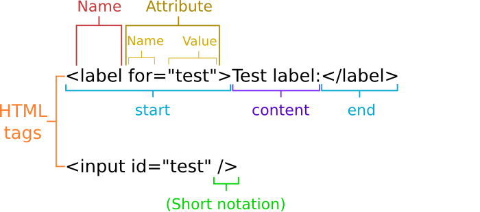
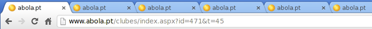
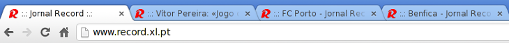

Agenda (2)
Agenda (3)
Agenda (4)
Motivation
- Since February 8, 2013 that all the sites which provide online information or services in Portugal are obliged to meet, respectively, the levels A and AA from the WCAG 2.0 - conjunction of the law establishing the adoption of open standards (law #36/2011) and the RNID (RCM #91/2012).
Accessibility definition
- Accessibility
- relates to the means and resources that enhance the skills of those who use them, reducing the effect of existing barriers.
Users with disabilities
- People with disabilities are part of the World's largest minority group.
- Currently it is estimated that 10% of the Worlds's population has some type of disability.
- This number has the tendency to grow as the population ages.
- In countries with life expectancy higher than 70 years, people live about 11.5% of their life with some kind of disability.
Disability types
- Physical disabilities
- Sight (blindness, low vision, color blindness, etc.)
- Hearing disabilities
- Cognitive disabilities
- Etc.
Accessibility as a tool
- Concerns about the accessibility tend to improve the quality of software and their content.
- However, by solving accessibility problems to some users, we should not create problems for the remaining users.
- Additional features may be provided to enhance the experience of some users, but the solution as a whole should not differentiate users.
Field of action
- Web site (or application) layout
- Contents (like text, images or video)
- Forms (and other interactive elements)
Web pages
Web pages are usually built in three languages:
- HTML as the core language to represent contents. It also refers others resources it needs to present the information correctly.
- CSS as a support language with instructions about the visual aspect of HTML elements.
- JavaScript as a support language to define behaviours and functional aspects of HTML elements.
HTML
- HTML has a relatively simple syntax. However it is important to know how to properly apply each of its tags to obtain the most adequate results.
- Each tag as their own function and characteristics, providing essential information about the content and its semantics.
- Applications like browsers, search engines crawlers, screen readers, etc., use this information to define their behaviour.
HTML tags
A HTML tag is formed with elements like the name (required), attributes (optional) and a value (optional)

Formal structure of a Web page
A Web page is made by a document type specification, a header and a body.
<!DOCTYPE html>
<html>
<head>
<title>Page title</title>
</head>
<body>
Page content
</body>
</html>
Formal structure of a Web page (2)
- The
doctypedefines the type and version of the specification which should be used to process the document. - In the page header (enclosed by the
headtag) usually we can find the meta-data that characterize the page, as well the reference to other resources required for the page layout and functionality (for instance, CSS files). - In the page body (enclosed by the
bodytag) are the actual contents of the page (like texts, images, videos, etc).
Cascading Style Sheet (CSS)
- Style sheets define the appearance which the content should have.
- Instructions with the specification of size, color, spacing, etc., must be defined through this language, thus promoting the separation between presentation and content.
- The style information handle essentially the visual aspects of a page and usually it is ignored by screen readers (with some exceptions).
Example with some CSS instructions
The following example present a set of CSS instructions which define the color red and a font-weight with the style bold, to all paragraphs in a HTML document.
p {
color: red;
font-weight: bold;
}
JavaScript
- This is a programming language used to manipulate, add interaction, define behaviors and to modify aspects of HTML elements.
Example:
document.getElementById("javascript-example-btn") .addEventListener("click", function () { alert("You have activated the button!"); }, false); - Some precautions should be taken when using JavaScript on the Web because some content modifications may not be detected by some screen readers (read aria-live).
Practical tips: Language definition
- The
langattribute defines the content language from a given tag and its descendants (tags). - Screen readers can use this information to choose the voice that they should use when reading the text.
- Search engines may use this information to index the site in the correct language.
<html lang="pt-PT"><!-- Set the document language to Portuguese --> (...)
<span lang="en">Web</span><!-- The word "Web" is in English-->
Page titles
- Page titles must be useful.

- A good practice is to invert the text order from the title showing first the title of the page followed by the site name.

Headings
- Headings must be used for titles.
- Each document should have a logical heading structure which starts on level 1 and don't skip levels.
- The title of the main content of a document should be a level 1 heading.
<h1>Site name</h1>
<h2 class="list-title">Main menu</h2><ul><li>...</li></ul>
<div id="content">
<h1>Page title</h1>
<p>Page content</p>
</div>
Questions?
- Doubts?
- Comments?
References
- G. Ivo, HTML/CSS tips to improve the accessibility of your websites, Codebits 2011, November 10, 2011.
- Inclusão e Acessibilidade em Ação, Inclusão vs. Acessibilidade, Instituto Politécnico de Leiria, June 1, 2012 <iact.ipleiria.pt/concepts/acessibilidade/> [Accessed May 3, 2013]
- Disabled World, World Facts and Statistics on Disabilities and Disability Issues, <www.disabled-world.com/disability/statistics/> [Accessed on May 27, 2015]
References (2)
- Windows Dev Center, Introduction to ARIA, Microsoft, <msdn.microsoft.com/en-us/windows/gg671918> [Accessed on May 27, 2015]
- J. Craig & M. Cooper, Accessible Rich Internet Applications (WAI-ARIA) 1.0, W3C, February 3, 2014 <www.w3.org/WAI/PF/aria/> [Accessed on May 27, 2015]
Source code
- You can find the source code of this presentation on GitHub: https://github.com/cesperanc/daws